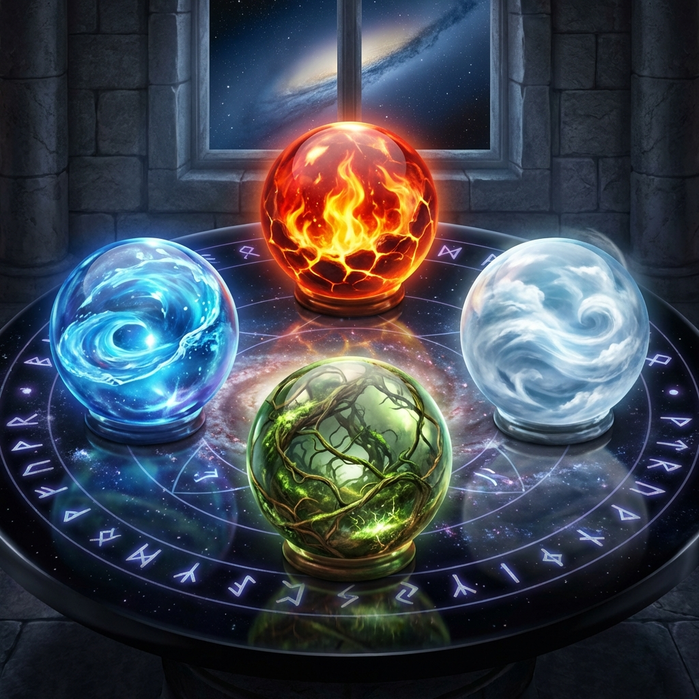

Astrolojide her burç bir enerji türünü temsil eder ve bu enerjiler dört "Element" ve üç "Nitelik" altında sınıflandırılır. Doğum haritanızdaki bu dengeler, mizacınızı anlamanın en temel yoludur.
Dört Element
Doğa dört temel yapı taşından oluşur: Ateş, Toprak, Hava ve Su. Haritanızda hangi elementin baskın olduğu, hayata yaklaşımınızı belirler.
🔥 Ateş Elementi (Koç, Aslan, Yay)
Ateş grubu burçları enerjik, hevesli ve ilham vericidir. Harekete geçmeyi severler, risk alırlar ve liderlik özellikleri gösterirler. Ancak sabırsız ve dürtüsel olabilirler.
🌍 Toprak Elementi (Boğa, Başak, Oğlak)
Toprak grubu burçları pratik, güvenilir ve somut sonuçlara odaklıdır. Güvenlik ihtiyacı yüksektir, sabırlıdırlar ve maddi dünya ile ilişkileri güçlüdür. Değişime direnebilirler.
💨 Hava Elementi (İkizler, Terazi, Kova)
Hava grubu burçları zihinsel, iletişimci ve sosyaldir. Fikirler, kavramlar ve bilgi alışverişi onlar için önemlidir. Objektiftirler ancak bazen duygusal kopukluk yaşayabilirler.
💧 Su Elementi (Yengeç, Akrep, Balık)
Su grubu burçları duygusal, sezgisel ve empatiktir. Derin hisleri vardır, çevrelerindeki enerjiyi sünger gibi emerler. Hayal güçleri geniştir ancak aşırı hassas olabilirler.
Üç Nitelik
Nitelikler ise enerjinin nasıl hareket ettiğini gösterir:
- Öncü (Koç, Yengeç, Terazi, Oğlak): Başlatan, inisiyatif alan enerji. Mevsimlerin başlangıcını temsil ederler.
- Sabit (Boğa, Aslan, Akrep, Kova): Koruyan, sürdüren, odaklanan enerji. Mevsimlerin en yoğun zamanını temsil ederler.
- Değişken (İkizler, Başak, Yay, Balık): Uyum sağlayan, esnek, bitiren enerji. Mevsim geçişlerini temsil ederler.
Sonuç
Kendinizi sadece Güneş burcunuzla sınırlamayın. Haritanızda ateş eksikliği olabilir veya su baskınlığı yaşayabilirsiniz. Bu dengesizlikleri fark etmek, hayatınızda neleri geliştirmeniz gerektiği konusunda size ipucu verir.